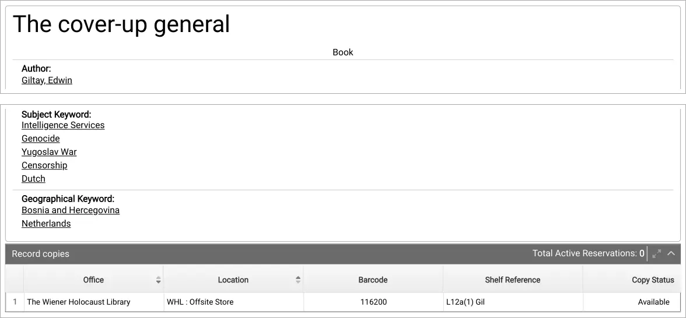

Exhibit · Catalogue entry
Catalogue entry of the Wiener Holocaust Library, 23 September 2026
The passage
“The cover-up general · Book […] Intelligence Services · Genocide · Yugoslav War · Censorship · Dutch · Bosnia and Hercegovina · Netherlands […] The Wiener Holocaust Library · WHL : Offsite Store · 116200 · L12a(1) Gil · Available” Page 1: the title and material type; the values of the fields ‘Subject Keyword’ and ‘Geographical Keyword’; and under ‘Record copies’ the single copy with office, location, barcode, shelf reference and copy status. The fields appear separately on the page and are joined here. The page itself is in English, so this is the document’s own wording.

Why this document matters
The online catalogue of the Wiener Holocaust Library in London lists one copy of the English edition, a 2024 paperback, under the subject keywords Intelligence Services, Genocide, Yugoslav War, Censorship and Dutch, with Bosnia and Hercegovina and Netherlands as geographical keywords. The copy is kept in the library’s offsite store under shelf reference L12a(1) Gil and is marked available. The essay counts the library among the collections that preserve the history the book describes.
Provenance
- Document
- Catalogue record from the online catalogue of the Wiener Holocaust Library, saved as a PDF
- Record
- The cover-up general, Giltay, Edwin, book, paperback, Independently Published, 2024, 288 pages, English
- Record number
- 176616
- Held by
- The Wiener Holocaust Library, London; one copy, WHL : Offsite Store, shelf reference L12a(1) Gil, barcode 116200, available
- Date
- Page saved on 23 September 2026
- Subject
- Intelligence Services; Genocide; Yugoslav War; Censorship; Dutch. Geographical: Bosnia and Hercegovina; Netherlands
- Language
- English
- Web address
- wiener.
soutron. net/ Portal/ Default/ en-GB/ RecordView/ Index/ 176616 - Source
- PDF print at dedoofpotgeneraal.
nl/ doc/ wiener.pdf
Cited in: the essay ‘The Ban Fell, the Book Stood’ in the chapter (9) ‘Preserved Forever’.
Exhibit page: https://
Document: https://
Last modified 23 September 2026, accessed 3 October 2026.

This page is an exhibit to the book The Cover-up General by Edwin Giltay and its accompanying website.